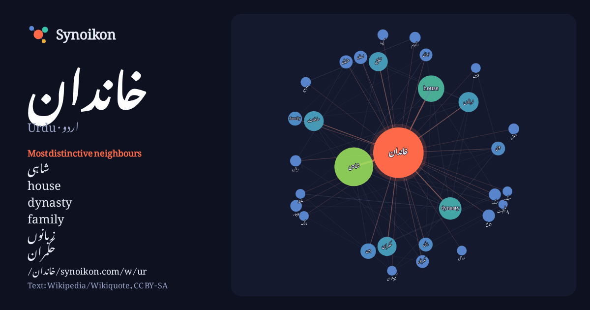

اردو · Urdu · popular word
خاندان
“family” · The words found around it in 1152 instances from Urdu Wikipedia, Wikiquote.

Most distinctive neighbours
- شاہی 69×
- house 67×
- dynasty 51×
- family 20×
- زبانوں 20×
- حکمران 20×
- لسانی 15×
- منگ 15×
- قاجار 14×
- النجوم 13×
- ذیلی 13×
- سلطنت 13×
- تغلق 12×
- چین 11×
- گپتا 11×
- شاخ 11×
- زبانیں 11×
- پینین 11×
- کیپیشان 11×
- عثمانی 11×
× = how many times more often than in general Urdu Wikipedia text.
Most frequent neighbours
- کا 308
- میں 201
- تھا 185
- شاہی 157
- سے 155
- اس 148
- نے 125
- جس 86
- یا 85
- house 73
- جو 69
- dynasty 53
- حکومت 51
- کو 43
- زبانوں 42
- سلطنت 41
- بعد 39
- تعلق 38
- حکمران 38
- بھی 37
In context
- کوشش کرتا ہے۔ اس نظام کو خاندان یا گھرانہ کہا جاتا ہے۔ اس میں کسی بھی انسان کے قریبی اور خونی رشتے دار شامل ہو سکتے ہیں۔ خاندان کا سربراہ عموماً سب سے بزرگ Wikipedia snippets · خاندان
- عثمانی خاندان یا عثمانیہ خاندان (Ottoman dynasty) (ترکی: Osmanlı Hanedanı / عثمانی خاندان) عثمانی روایت کے مطابق، اس خاندان کا آغاز عثمان اول کی سرکردگی Wikipedia snippets · عثمانی خاندان
- ہان خاندان (چینی : 汉朝) چین کا ایک شاہی خاندان تھا۔ یہ خاندان 202 قبل مسیح میں اقتدار میں آیا تھا۔ انھوں نے کنفیوشس مت اور لیگل ازم کے فلسفہ کی پیروی کی۔ Wikipedia snippets · ہان خاندان
- شاہی خاندان ایک بادشاہ یا ملکہ کا قریبی خاندان ہوتا ہے یا یہ بعض اوقات بادشاہ یا ملکہ کا وسیع خاندان ہوتا ہے۔ Wikipedia snippets · شاہی خاندان
- جوہری خاندان سے مراد ایک ایسا خاندان جس میں ایک آدمی، اس کی اہلیہ اور بچے شامل ہوتے ہیں۔ اس خاندان میں عمومًا بڑے بزرگ (ساس اور سسرے) شامل نہیں ہوتے ہیں۔ Wikipedia snippets · جوہری خاندان
- خاندان کاپے (House of Capet) (فرانسیسی: Les Capétiens, la Maison capétienne) جسے خاندان فرانس (House of France) بھی کہا جاتا ہے مملکت فرانس پر 987ء سے Wikipedia snippets · خاندان کاپے
- نہرو گاندھی خاندان بھارت کا ایک اہم سیاسی خاندان ہے، جس کا ملک کی آزادی کے بعد انڈین نیشنل کانگرس کے روپ میں ملک پر غلبہ رہا ہے۔ نہرو خاندان کے ساتھ گاندھی Wikipedia snippets · نہرو گاندھی خاندان
- والا ایک شاہی خاندان تھا۔ اسے خاندان کینیوٹ (House of Canute)، خاندان ڈنمارک (House of Denmark)، خاندان گورم (House of Gorm) اور جیلینگ خاندان (Jelling Dynasty) Wikipedia snippets · خاندان نیلنگا
More Urdu words
Precomputed on 2026-10-09 with default settings (±5 words, medium corpus). The interactive map can refresh it with live data.